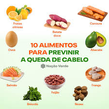

Meus projetos
Cuidados Básicos
Evitar uso excessivo de calor (secador, chapinha). Pentear com delicadeza, de preferência com pente de dentes largos. Hidratar regularmente. Cortar as pontas a cada 2 ou 3 meses.
Higiene e Lavagem
Lavar com água morna ou fria. Escolher o shampoo adequado ao tipo de cabelo. Usar condicionador apenas no comprimento e pontas. Evitar lavar todos os dias em cabelos secos.

Alimentação e Saúde Capilar
Alimentos ricos em vitamina A, C, E, zinco, ferro e biotina ajudam no crescimento saudável. Beber bastante água para manter a hidratação dos fios. Exemplo de alimentos: ovos, nozes, cenoura, peixes, vegetais verdes.